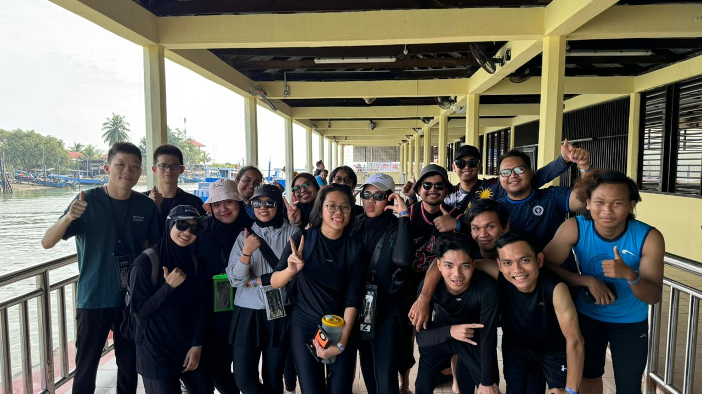
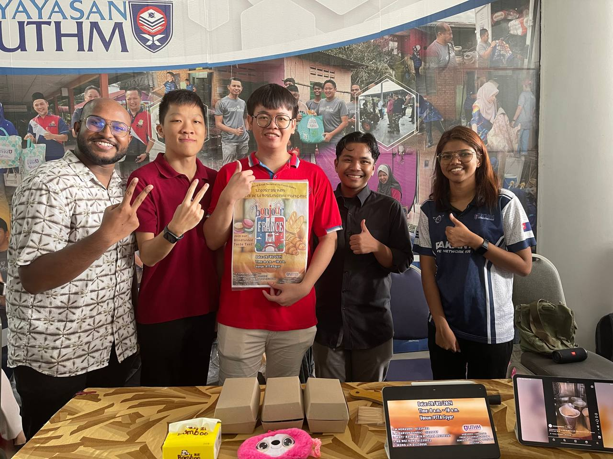

Vacation in Mersing, Johor: Bonding Beyond the Classroom
Our trip to Mersing, Johor, was one of the best experiences I’ve shared with my coursemates. Away from lectures and assignments, we had a chance to unwind together, exploring beautiful beaches, enjoying local cuisine, and taking in the peaceful vibes of Mersing. Whether we were relaxing by the sea or laughing over dinner, the trip allowed us to connect on a deeper level, creating friendships and memories that will stay with us long after university life. This vacation wasn’t just a break; it was a bonding experience that reminded me how important it is to create moments beyond our academic lives.
Foreign Language Festival Week: Embracing the French Culture
Participating in the Foreign Language Festival Week was an exciting way to celebrate my journey in learning French. The event brought together students from various language backgrounds, each eager to showcase their language skills and cultural insights. As a French learner, I joined activities that ranged from speaking competitions to cultural exhibits, all of which allowed me to dive deeper into the language and the vibrant French culture. The festival was both challenging and fun, pushing me to practice my French in new ways while connecting with others who shared a passion for languages.
